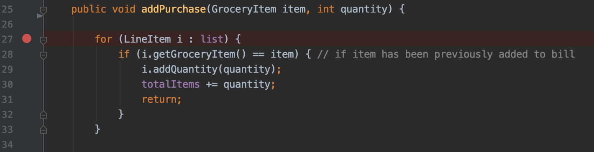
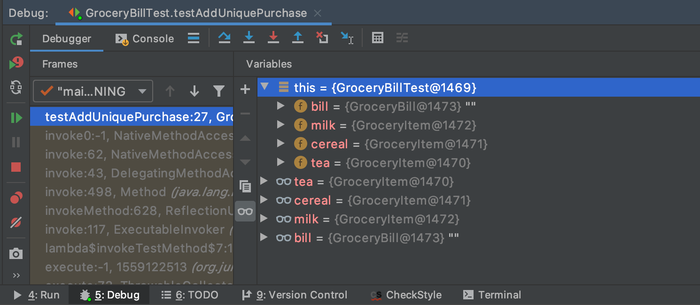

🕷 What is debugging?
Debugging is the process of identifying and removing problems from your code, known as "bugs". You might've already even heard of compile errors, stack overflow, or seg faults! The debugging process might be tedious and daunting, but this section will provide you with helpful tips and resources to tackle your bugs! 😤
🔧 Debugging basics
Your code should already be accessible in an IDE (Integrated Development Environment). For information on how to use an IDE and set it up, see
. Although you could just debug with print statements, using an IDE will help you get a better look at what's happening in your code in real-time, such as viewing the call stack and watching variables. Breakpoints are like stop signs that you can intentionally place in your code. When you debug, the program will pause before the breakpoint line is executed. In whichever IDE you're working with, you should be able to place a breakpoint by clicking to the left of the line numbers.
 Here, a breakpoint is placed on line 27 (IntelliJ IDEA)
- When you hit debug, a debug tool window will appear and would look something like this. Usually, it'll include the call stack and local variables at that point in the code, as seen here:
 A default debug tool window in IntelliJ IDEA
- By keeping track of all your variables as you go through your code, you'll probably clearly see where something went wrong. But wait! What are all those icons?
From left to right, these debugging controls are step over, step into, force step into, and step out - explained more below!
Common debugging controls
- When you step over a line, the debugger will simply move onto the next line. If the line contains a function/method call, it will be executed and returned without examining its implementation.
- When you step into a line that involves a call to some operation, the debugger will go to that implementation and examine what's happening inside. Typically, if you think a line/the action it calls could be causing a bug, you'd step into it to take a closer look!
- Force step into will, as it implies, force the debugger to step into a line if it was ignored by a regular step into command.
- Stepping out will take you out of the current function/method and back to the caller.
- For some examples, see JetBrains' Step through the program guide!
🧠 Using Stack Overflow
At some point, you'll probably come across a scary red error that makes absolutely no sense to you. By copy-pasting the error message into a simple Google search, a StackOverflow will probably pop up!
- Stack Overflow is kind of like Yahoo Answers, but for programmers! People post their problem, a snippet of their code, and what they've tried doing to fix it, and others will jump in to help with some big brain energy 🤓
- You'll probably be able to find someone who has posted a question about the exact same error message as you! Don't skip straight to the answer with the most upvotes; instead, read through their problem to make sure you understand it before reading and understanding the solution. You shouldn't be hard-coding and slapping the solution straight into your code! How does the solution supplement your code, and how should you incorporate it?
- Remember that some posts may be outdated!
🚫 Common Errors!
- Syntax errors: Every programming language has different grammar rules! A syntax error will usually be underlined in a red squiggly line by your IDE and will stop your program from running. This might even lead to compilation errors, when the compiler is unable to turn your higher-level code into lower-level code.
- Logic errors: Sometimes the hardest to recognize because, in your eyes, everything seems logical, yet your code yields unexpected behavior. Your output might be wrong, or the program might even crash. Some examples include a null reference, confusing '=' and '==' in a conditional statement, or declaring but not initializing a variable.
- Compilation errors: Usually a result of syntax or semantic errors. Detected by the compiler, your code will not run and an error message will be in the output. A simple example is forgetting to put a semicolon after a line in C - your corresponding error message will look something like: "expected ' ; ' before ' } ' token"
- Runtime errors: Unlike compilation errors, runtime errors are undetected by the compiler and cause your program to crash when the code is executed after successful compilation. Common runtime errors include memory leaks, division by zero, and giving the wrong input(s).
✅ Writing Tests
In agile software development, test-driven design is a crucial component of writing code. By writing tests and checking their outputs, you can make sure your code performs as you intend it to. A collection of test cases is called a test suite, and should have these qualities:
A test case should cover all possible combination of inputs and outputs for the method/function
- Let's take a look at this example...
// a simple code snippet that compares two integers // we import Scanner so we can receive user keyboard input import java.util.Scanner; public class Test { public static void main(String[] args) { // create Scanner to obtain input from command window Scanner input = new Scanner(System.in); int x; int y; System.out.print( "Input first integer x: " ); // prompt user for first int x = input.nextInt(); // read first number from user System.out.print( "Input second integer y: " ); // prompt user for second int y = input.nextInt(); // read second number from user if (x > y) { System.out.print("x is greater than y"); } else { System.out.print("x is less than y"); } } }- The two test cases that immediately come to mind are:
- when x is greater than y
- when y is greater than x
- Is that all? No, because we need to check what happens when x is equal to y! In the above code snippet, we can see if the first boolean ( x > y ) is false, then "x is less than y" will be printed. However, we forgot to account for the case where the two integers are both equal! In this case, we can modify the first condition to say if x is greater than or equal to y and change the print statement to match, or introduce a new branch that checks if ( x == y ) before the last else branch.
- Our third test case should be:
- when x is equal to y
- Now, we have accounted for all the possible inputs + outputs for this program!
Testing a specific combination of inputs/outputs repetitively doesn't hurt, but is trivial and won't contribute to your overall code coverage
- Boundary checking: test edge cases within your range of values
- A test case should be named for the case it tests ;)
Different IDE's have different unit testing frameworks, usually built-in. Be sure to familiarize yourself with their respective user guides/annotations. Some common examples are: